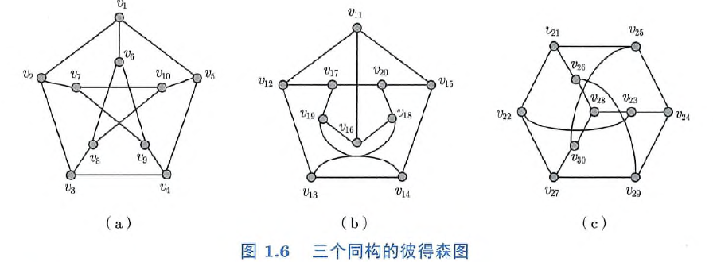

图论笔记（九）¶
边的染色¶
思考题 9.1 图 1.6（a）所示的彼得森图的边色数是多少？
 我们看 1.6 (c) 所示的与彼得森同构的图，由与 \(d(v_{28}) = 3\)，我们不妨假设 \(ec(v_{28} v_{23}) = 1, ec(v_{28} v_{26}) = 2, ec(v_{28} v_30)\)，于是 \(ec(v_{23} v_{22}) \neq 1\)，因此 \(ec(v_{22} v_{21})\) 和 \(ec(v_{22} v_{27})\) 中必有一者为 1。根据对称性，我们不妨假设 \(ec(v_{22} v_{27}) = 1\)，于是可以依次得到 \(ec(v_{27} v_{29}) = 3, ec(v_{29} v_{24}) = 2, ec(v_{24} v_{25}) = 1, ec(v_{25} v_{21}) = 3, ec(v_{21} v_{22}) = 2\)。然而，我们可以推出 \(ec(v_{22} v_{23}) = ec(v_{23} v_{24}) = 3\)，因此 \(\chi'(G) > 3\)。容易构造出 4 边染色，这里就不给出了，事实上，由 Vizing 定理马上就得到 \(\chi'(G) \leq 4\)，于是 \(\chi'(G) = 4\)。
思考题 9.2 边数为 \(m\) 的图的边色数的上界是多少？下界是多少？
上界为 \(m\)，考虑星形，其边色数就是 \(m\)；下界为 \(1\)，考虑每一个连通分支都是一条边的图，其边色数为 1。
思考题 9.3 完全图 \(K_n\) 的边色数是多少？
我们分奇偶讨论：
1. \(n\) 为偶数，可以知道 \(K_n\) 每个点的度都为 \(n-1\)，于是 \(\xi' (G) \geq n - 1\)。我们给出构造 $$
E_i = {{v_{k + 1} v_{[(k+i)\mod n] + 1} : k = 0, 1, ..., n - 1}}
$$
于是 \(E_1, E_2, ..., E_{n / 2}\) 构成边集的一个划分，其中 \(E_1, E_2, ..., E_{n / 2 - 1}\) 由几个圈构成，可以进一步划分为两部分，最后就得到合法的构造，因此 \(\chi' (G) = n - 1\)。
2. \(n\) 为奇数，则每个集合都是一个边独立集，大小至多为 \(\frac{n-1}{2}\)，于是
$$
\chi'(G) \geq \frac{n(n-1)/2}{(n-1)/2} = n
$$
构造出 n 边染色只需要在再加一个点，利用点数为偶数的构造构造出 n 边染色在删去加入的点即可，最后答案 \(\chi'(G) = n\)。
思考题 9.4 树的边色数是多少？
\(\chi'(T) = \Delta(T)\)，只需找到一个根，对于每个点向下分配颜色，使得分配的颜色互不相同且与父节点到其的边颜色不同即可。
定理 9.1
对于任意一个二分图 \(G\)：
\(\chi'(G)=\Delta(G)\)
思考题 9.5 证明定理 9.1
首先显然 \(\chi'(G) \geq \Delta(G)\)，只需给出一种 \(\Delta(G)\) 边染色即可。
我们对 \(\Delta(G)\) 归纳地给出构造，当 \(\Delta(G) = 0\) 时，定理显然成立；当 \(\Delta(G) > 0\) 时，我们先向点数少的一边加入点直到 \(L\) 和 \(R\) 点数相等，再从 \(L\) 中度小于 \(\Delta (G)\) 的点向 \(R\) 中度小于 \(\Delta(G)\) 的点连边（容易证明这样的点对一定存在），直到所有点的度都等于 \(\Delta(G)\)，记得到的图为 \(G'\)。
利用第五章 Hall 定理的推论 2 知正则二分图 \(G\) 有完美匹配 \(M\)，我们取 \(M' = M \cap E(G)\)，则 \(M'\) 是 \(G\) 的一个匹配，并且饱和了所有 \(G\) 中度为 \(\Delta(G)\) 的点（因为 \(G'\) 中与度为 \(\Delta(G)\) 的点关联的边在 \(G\) 中就已经存在），于是 \(\Delta(G - M') = \Delta(G) - 1\)，根据归纳假设我们知道 \(G - M'\) 的边集可以划分为 \(\Delta(G) - 1\) 个边独立集，在加上 \(M'\) 就构成 \(G\) 的边独立集划分，于是定理得证。
思考题 9.6 若图 \(G\) 的每个连通分支 \(G_i\) 的边色数为 \(\chi_i\)，则 \(G\) 的边色数是多少？
\(\displaystyle\max_{i} \{\chi_i\}\)，不同连通分支的边染色互不影响，每个连通分支都取对应的边染色即可。
定理 9.2（维辛定理）
对于任意一个图 \(G\)： $$ \Delta(G)\leq \chi'(G)\leq \Delta(G)+1 $$
证明
\(\chi' (G) \geq \Delta(G)\) 是显然的，后面的算法给出了构造 \(\Delta(G) + 1\) 边染色的方法。
计算二分图正常 \(\Delta\) 染色的分治算法¶
\begin{algorithm}
\caption{DCEC Algorithm}
\begin{algorithmic}
\Input {Bipartite graph $G = \langle X \cup Y, E \rangle$}
\Initialize $c \gets 0, E_1 \gets \emptyset, E_2 \gets \emptyset$
\Procedure{Dcec}{$G$}
\If {$\Delta(G) = 1$}
\State $c \gets c + 1$
\ForAll {$e \in E$}
\State $ec(e) \gets c$
\EndFor
\Else
\If {$\Delta(G)$ is odd}
\State $M \gets $\texttt{MDMatching}$(G)$
\State $c \gets c + 1$
\ForAll {$e \in M$}
\State $ec(e) \gets c$
\EndFor
\State $G \gets G - M$
\EndIf
\State $P \gets $\texttt{EulerPartition}$(G)$
\ForAll {$v_0, e_1, v_1, \ldots, e_t, v_t \in P$}
\ForAll {$e_i \in \{e_1, e_2, \ldots, e_t\}$}
\If {$i$ is odd}
\State $E_1 \gets E_1 \cup \{e_i\}$
\Else
\State $E_2 \gets E_2 \cup \{e_i\}$
\EndIf
\EndFor
\EndFor
\State \Call{Dcec}{$G[E_1]$}
\State \Call{Dcec}{$G[E_2]$}
\EndIf
\EndProcedure
\end{algorithmic}
\end{algorithm}
\begin{algorithm}
\caption{MDMatching Algorithm}
\begin{algorithmic}
\Input {Bipartite graph $G = \langle X \cup Y, E \rangle$}
\Initialize $X' \gets \emptyset, Y' \gets \emptyset, M_1 \gets \emptyset, M_2 \gets \emptyset$
\ForAll {$v \in X$}
\If {$d(v) < \Delta(G)$}
\State $X' \gets X' \cup \{v\}$
\EndIf
\EndFor
\If {$X' \neq X$}
\State $M_1 \gets$ \texttt{MaximumMatching}$(G - X')$
\EndIf
\ForAll {$v \in Y$}
\If {$d(v) < \Delta(G)$}
\State $Y' \gets Y' \cup \{v\}$
\EndIf
\EndFor
\If {$Y' \neq Y$}
\State $M_2 \gets$ \texttt{MaximumMatching}$(G - Y')$
\EndIf
\State $M \gets M_1 \cap M_2$
\State $M' \gets M_1 \operatorname{\Delta} M_2$
\ForAll {$G_i \in G[M']$}
\State $v_0, e_1, v_1, \ldots, e_l, v_l \gets \text{maximal path or cycle in } G[M'] \text{ with start point of degree }d = \Delta(G)$
\ForAll {$e_i \in \{e_1, e_2, \ldots, e_l\}$}
\If {$i$ is odd}
\State $M \gets M \cup \{e_i\}$
\EndIf
\EndFor
\EndFor
\Return $M$
\end{algorithmic}
\end{algorithm}
先来回顾一下 Hall 定理：
霍尔定理(Hall's theorem)
对于二分图 \(G = \langle X \cup Y, E \rangle\)，\(G\) 有饱和顶点子集 \(X\) 中所有顶点的匹配当且仅当对于任意顶点子集 \(S \subseteq X\)，\(|N(S)| \geq |S|\).
A bipartite graph \(G := G[X, Y]\) has a matching which covers every vertex in \(X\) if and only if
$$
|N(S)| \geq |S| \text{ for all } S \subseteq X
$$
思考题 9.7 为什么图 \(G - X'\) 的最大匹配饱和顶点子集 \(X \setminus X'\) 中的所有顶点？
只需注意到 \(\forall v \in X \setminus X', d(v) = \Delta(G)\)，我们任意取 \(S \subseteq X \setminus X'\)，设 \(E_1\) 为 \(S\) 关联的边集， \(E_2\) 为 \(N(S)\) 关联的边集，我们有 $$ \Delta(G) \cdot |S| = |E_1| \leq |E_2| \leq \Delta(G) \cdot |N(S)| $$ 即 \(|S| \leq |N(S)|\)，由 Hall 定理我们即得结论。
思考题 9.8 对于长度为偶数的路，为什么其起点和终点中只能有一个满足 \(d = \Delta(G)\)？
我们不妨假设起点 \(u\) 满足 \(d(u) = \Delta(G)\) 且 \(u \in X \setminus X'\)，那么路上面的边必然交替的属于 \(M_1\) 和 \(M_2\)，即 \(e_1 \in M_1, e_2 \in M_2, ...\)。同时我们还知道 \(e_1 \notin M_2, e_2 \notin M_1\)，否则 \(G[M']\) 的对应连通分支就成为一条边，与长度为偶数矛盾。
由于路的长度为偶数，容易知道 \(e_l\in M_2\) 且 \(v_l \in X\)，如果 \(v_l \in X \setminus X'\)，那么 \(M_1\) 中应该有一条边 \(e_{l+1} \in M_1\) 不与 \(e_l\) 重合，否则 \(e_{l+1}\) 和 \(e_{l-1}\) 相邻与匹配定义矛盾，这样，将 \(e_{l+1}\) 拼接在路的后面得到一条更长的路，与极长矛盾。所以我们有 \(v_l \in X'\)，于是 \(d(v_l) < \Delta (G)\)。
思考题 9.9 根据欧拉划分的性质，为什么 \(\Delta (G[E_1]), \Delta(G[E_2]) \leq \frac{\Delta(G)}{2}\)
由题意有 \(\Delta(G - M) = \Delta(G) - 1\)，对于每个闭迹和一个特定的顶点 \(v\)，我们将闭迹中与 \(v\) 关联的边的恰好一半分配给 \(E_1\)，而另一半分配给 \(E_2\)。唯一会导致分配不均的是 \(v\) 是非平凡迹的起点或终点，但以特定点为起点或终点的非平凡迹至多只有 1 条，因此 $$ \Delta(G[E_1]), \Delta(G[E_2]) \leq \frac{\Delta(G - M) + 1}{2} = \frac{\Delta(G)}{2} $$
\begin{algorithm}
\caption{EulerPartition Algorithm}
\begin{algorithmic}
\Input {Graph $G = \langle V, E \rangle$}
\Initialize $\mathcal{P} \gets \emptyset$
\While {$E \neq \emptyset$}
\If {$\exists v \in V, d(v)$ is odd}
\State $u \gets v$
\Else
\State $u \gets$ any non-isolated vertex in $V$
\EndIf
\State $P \gets$ a maximal trail or maximal closed trail in $G$ starting from $u$
\State $\mathcal{P} \gets \mathcal{P} \cup \{P\}$
\State $G \gets G - P$ (the set of edges traversed by $P$)
\EndWhile
\Return $\mathcal{P}$
\end{algorithmic}
\end{algorithm}
思考题 9.10 为什么集合 \(\mathcal{P}\) 中的迹经过的边的集合满足欧拉划分的性质？
只需证明算法运行过程中每个点至多被选择为欧拉迹的起点一次，这是因为算法优先选择度为奇数的顶点，并且不可能停在度为偶数的顶点，否则终点还会有一条边没被选择，与极长矛盾，这样奇数度的顶点就会减少两个，起点和终点的度在删除后都变成偶数。而如果算法选择了偶数度的点为起点，所有点的度均为偶数，这时候为了满足极长只能形成一个欧拉回路而不能停在起点之外的任何点。所以以特定奇数度顶点为起点的迹至多有一条。
定理 9.3
算法构造的函数 \(ec\) 是图 \(G\) 的正常 \(\Delta(G)\) 边染色。
思考题 9.11 证明定理 9.3
对于 \(\Delta(G) = 1\)，算法的正确性是显然的
做归纳假设：算法可以找到 \(\Delta (G) \leq n - 1\) 的正常 \(\Delta(G)\) 边染色。我们将 \(G\) 划分成 \(M, G[E_1], G[E_2]\) 三部分，对于 \(G[E_1]\) 和 \(G[E_2]\)，算法都是正确的，于是算法输出的染色颜色数量为
$$
\Delta(G[E_1]) + \Delta(G[E_2]) + 1 = \Delta(G)
$$
可以归纳的证明算法的输出是正常染色，定理得证。
如果用 Hopcroft-Karp 算法寻找最大匹配，则算法时间复杂度为 \(O(\sqrt{n}m\log \Delta)\)
Misra-Gries 算法¶
\begin{algorithm}
\caption{Misra-Gries Edge Coloring Algorithm}
\begin{algorithmic}
\Input {Graph $G = \langle V, E \rangle$}
\Initialize {Set $ec(e) \gets 0$ for all edges $e \in E$}
\While {$\exists (u, v_0) \in E, ec((u, v_0)) = 0$}
\State $v_0, v_1, \ldots, v_l \gets$ a maximum $u$-fan
\State $c_l \gets$ a color not used on edges incident to $v_l$ (between 1 and $\Delta(G)+1$)
\State $c_u \gets$ a color not used on edges incident to $u$ (between 1 and $\Delta(G)+1$)
\If {$\exists v_k \in \{v_0, v_1, \ldots, v_{l-1}\}, ec((u, v_k)) = c_l$}
\State $P \gets$ a longest path starting at $u$, alternating colors $c_l$ and $c_u$
\For {\textbf{each} edge $e \in P$}
\If {$ec(e) = c_l$}
\State $ec(e) \gets c_u$
\Else
\State $ec(e) \gets c_l$
\EndIf
\EndFor
\If {$P$ passes through vertex $v_{k-1}$}
\State $v_w \gets v_l$
\Else
\State $v_w \gets v_{k-1}$
\EndIf
\Else
\State $v_w \gets v_l$
\EndIf
\For {\textbf{each} $v_i \in \{v_1, v_2, \ldots, v_w\}$}
\State $ec((u, v_{i-1})) \gets ec((u, v_i))$
\EndFor
\State $ec((u, v_w)) \gets c_l$
\EndWhile
\end{algorithmic}
\end{algorithm}
思考题 9.12 为什么色 \(c_0\) 一定存在？
因为 \(v_0\) 至多关联 \(\Delta (G)\)。
顶点的染色¶
思考题 9.21 图 1.6（a）所示的彼得森图的点色数是多少？
由于图中包含奇圈，显然 2 种颜色是不行的，再注意到 \(\{v_1, v_3, v_9, v_{10}\}, \{v_2, v_4, v_8\}, \{v_5, v_6, v_7\}\) 符合要求，因此点色数为 3。
思考题 9.22 阶为 \(n\) 的图的点色数的上界是多少？下界是多少？
考虑完全图，任意两个顶点不能染相同的颜色，因此点色数是 \(n\)，即上界为 \(n\)；考虑空图，点色数为 1，因此下界为 1，如果是非空图，则至少为 2。
思考题 9.23 完全图 \(K_n\) 的点色数是多少？
如上，点色数为 \(n\)。
思考题 9.24 树的点色数是多少？
对于平凡树，点色数为 1；对于非平凡树，我们可以将他看做一个二分图，一边染一种颜色，共需要两种颜色，点色数为 2。
思考题 9.25 二分图的点色数是多少？
每边染一种颜色，点色数为 2。
思考题 9.26 若图 \(G\) 的每个连通分支 \(G_i\) 的点色数为 \(\chi_i\)，则 \(G\) 的点色数是多少？
不同连通分支互不影响，点色数为 \(\displaystyle\max_{i} \chi_i\)。
思考题 9.27 若连通图 \(G\) 的每个块 \(G\) 的点色数为 \(\chi_i\)，则 \(G\) 的点色数是多少？
不同块至多公用一个顶点，其他顶点互不影响，只需保证公共点染相同颜色即可，点色数为 \(\displaystyle\max_{i} \chi_i\)。
定理 9.5
对于任意一个图 \(G\)： $$ \chi(G) \leq \Delta(G) + 1 $$
定理 9.6（Brook 定理）
对于任意一个连通图 \(G\)，若 \(G\) 非完全图且非恰由一个奇圈组成，则 $$ \chi(G) \leq \Delta(G) $$
思考题 9.28 证明定理 9.6
思考题 9.29 证明：若图 \(G\) 的所有点导出子图的最小度至多为 \(k\)，则 \(\chi(G) \leq k + 1\)
我们用对 \(|V(G)|\) 归纳：
1. 若 \(|V(G)| = 1\)，命题显然成立
2. 若 \(|V(G)| > 1\)，则 \(G\) 中存在一个顶点度不超过 \(k\)。考虑图 \(G - v\)，它的每个点导出子图的最小度不超过 \(k\)，于是由归纳假设我们知道 \(\chi(G - v) \leq k + 1\)。取 \(G - v\) 的一个正常 \(\chi(G - v)\) 点染色，则 \(v\) 还有 \(k + 1 - d(v) > 0\) 中颜色可染，任意染一种颜色就得到 \(\chi(G - v)\) 染色，因此 \(\chi(G) \leq \chi(G - v) \leq k + 1\)。